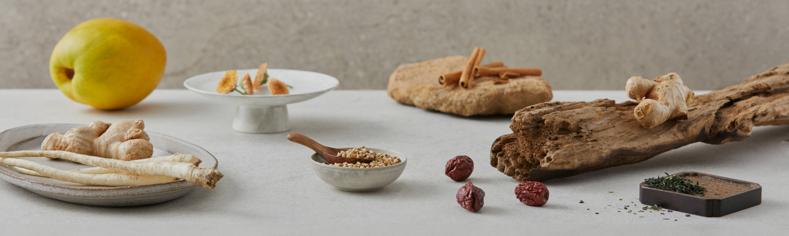

Through rigorous selection of ingredient suppliers,
we ensure that the materials we request are consistently delivered,
and we demand periodic production management checks to ensure that the suppliers can provide safe
ingredients.
Furthermore, we conduct microbiological and chemical tests to determine the safety of these
ingredients,
using only those that meet strict criteria.
Using selectively sourced ingredients, we produce our products in a safe production facility,
and we conduct quality assurance tests to ensure that safe products are delivered to consumers throughout
the entire process.
Our Quality
We promise to always provide
selected materials with the best quality.

Our Herbs
The ingredients we have chosen are based on high standards for taste,
functionality, and quality.
We primarily use traditional herbal ingredients with known and historically supported efficacy. We aim to provide functional differentiation through the selection of distinctive ingredients and focus on taste through expert blending of tea ingredients.
Furthermore, we conduct quality and equipment testing throughout the entire process, from ingredient selection to product production, to ensure product safety. We have established meticulous production management to offer our own special traditional ingredients.
Our Formulations
Ingredients inherited from Oriental medicine and folk remedies.
We have modernized traditional Korean herbal components that have been passed down for hundreds of years and are developing our products based on the efficacy and taste of traditional remedies. We have also added supplementary ingredients to enhance the taste and aroma of the main ingredients known for their health benefits.


Our Process
We have established meticulous production management to offer our own special traditional ingredients.

Our Best Quality
We continuously test and review the entire production process step by step to ensure the highest taste and quality.

A Tricky Inspection
We conduct sensory tests for all ingredients to verify if they meet the criteria for color, aroma, and taste.

Freshness From
The Hands Of Experts
Our tea experts blend each ingredient to create a well-rounded product that harmonizes the unique flavors and characteristics of each ingredient.